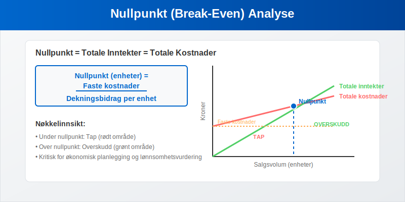
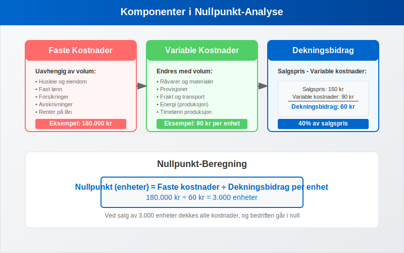
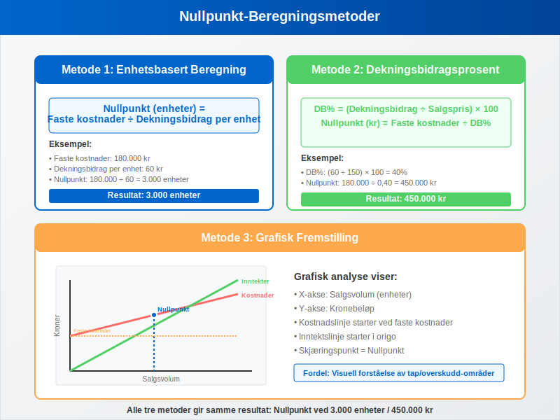
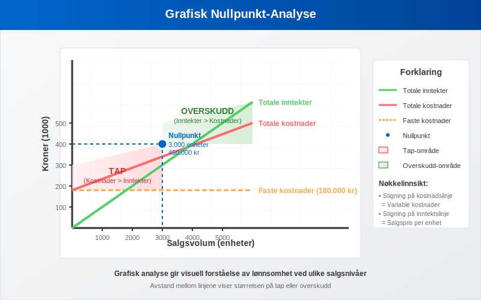
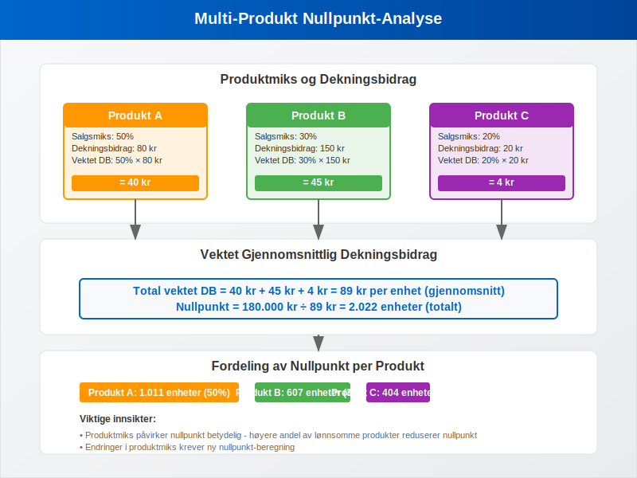

Nullpunkt (break-even) er det kritiske punktet hvor en bedrifts totale inntekter er lik totale kostnader, og bedriften verken går med overskudd eller underskudd. Nullpunkt-analyse (også kalt dekningspunkt-analyse) er et fundamentalt verktøy for økonomisk planlegging og lønnsomhetsvurdering som hjelper bedrifter med å forstå hvor mye de må selge for å dekke alle sine kostnader.
For en spesialisert analyse av nullpunktsomsetning - det kritiske omsetningsnivået i kroner - se vår detaljerte guide som fokuserer spesifikt på beregning og optimalisering av break-even omsetning.

Hva er Nullpunkt-Analyse?
Nullpunkt-analyse er en regnskapsmessig metode som beregner det eksakte punktet hvor:
- Totale inntekter = Totale kostnader
- Resultat = 0 (verken overskudd eller underskudd)
- Bedriften har dekket alle sine faste og variable kostnader
- Grunnlaget for lønnsomhetsvurdering er etablert
Formål med Nullpunkt-Analyse
Nullpunkt-analyse brukes til å:
- Planlegge salgsvolum for å oppnå ønsket lønnsomhet
- Vurdere nye produkter eller tjenester
- Analysere prisstrategier og deres påvirkning på lønnsomhet
- Forstå kostnadsstrukturen i bedriften
- Ta investeringsbeslutninger basert på arbeidskapital og avkastning
Grunnleggende Komponenter
For å forstå nullpunkt-analyse må vi først identifisere de viktigste komponentene:

Faste Kostnader
Faste kostnader forblir konstante uavhengig av produksjons- eller salgsvolum:
- Husleie og eiendomskostnader
- Lønn til fast ansatte
- Forsikringer og avgifter
- Avskrivninger på anleggsmidler
- Renter på lån
Variable Kostnader
Variable kostnader endres proporsjonalt med produksjons- eller salgsvolum:
- Råvarer og materialkostnader
- Provisjoner til selgere
- Frakt og transportkostnader
- Energikostnader knyttet til produksjon
- Timelønn for produksjonsarbeidere
Dekningsbidrag
Dekningsbidrag er forskjellen mellom salgspris og variable kostnader per enhet:
Dekningsbidrag per enhet = Salgspris - Variable kostnader per enhet
Dekningsbidraget brukes til å dekke faste kostnader og generere overskudd.
Beregning av Nullpunkt
Det finnes flere metoder for å beregne nullpunkt, avhengig av hvilken informasjon som er tilgjengelig.

Metode 1: Enhetsbasert Beregning
Formel:
Nullpunkt (enheter) = Faste kostnader ÷ Dekningsbidrag per enhet
Eksempel: En bedrift produserer og selger widgets med følgende data:
| Parameter | Verdi |
|---|---|
| Salgspris per enhet | 150 kr |
| Variable kostnader per enhet | 90 kr |
| Dekningsbidrag per enhet | 60 kr |
| Totale faste kostnader | 180.000 kr |
Beregning:
- Nullpunkt = 180.000 ÷ 60 = 3.000 enheter
- Nullpunkt i kroner = 3.000 × 150 = 450.000 kr
Metode 2: Dekningsbidragsprosent
Formel:
Dekningsbidragsprosent = (Dekningsbidrag ÷ Salgspris) × 100
Nullpunkt (kroner) = Faste kostnader ÷ Dekningsbidragsprosent
Fortsettelse av eksemplet:
- Dekningsbidragsprosent = (60 ÷ 150) × 100 = 40%
- Nullpunkt = 180.000 ÷ 0,40 = 450.000 kr
Metode 3: Grafisk Fremstilling
Nullpunkt kan også visualiseres grafisk hvor:
- X-aksen representerer salgsvolum
- Y-aksen representerer kronebeløp
- Kostnadslinje starter ved faste kostnader og stiger med variable kostnader
- Inntektslinje starter i origo og stiger med salgspris
- Skjæringspunktet er nullpunktet

Praktiske Anvendelser
Produktlønnsomhet
Nullpunkt-analyse hjelper med å vurdere lønnsomheten til individuelle produkter eller tjenester:
| Produkt | Salgspris | Variable kostnader | Dekningsbidrag | DB% |
|---|---|---|---|---|
| Produkt A | 200 kr | 120 kr | 80 kr | 40% |
| Produkt B | 300 kr | 150 kr | 150 kr | 50% |
| Produkt C | 100 kr | 80 kr | 20 kr | 20% |
Analyse: Produkt B har høyest dekningsbidragsprosent og bidrar mest til å dekke faste kostnader.
Prisstrategier
Nullpunkt-analyse viser hvordan prisendringer påvirker lønnsomhet:
Scenario-analyse:
| Scenario | Pris | Variable kostnader | DB per enhet | Nullpunkt (enheter) |
|---|---|---|---|---|
| Basis | 150 kr | 90 kr | 60 kr | 3.000 |
| Prisøkning 10% | 165 kr | 90 kr | 75 kr | 2.400 |
| Prisreduksjon 10% | 135 kr | 90 kr | 45 kr | 4.000 |
Kapasitetsplanlegging
Bedrifter bruker nullpunkt-analyse for å planlegge produksjonskapasitet og anskaffelser:
- Minimum salgsvolum for lønnsomhet
- Kapasitetsutnyttelse for optimal drift
- Investeringsbehov i nye anleggsmidler
Avanserte Nullpunkt-Analyser
Multi-Produkt Nullpunkt
For bedrifter med flere produkter beregnes vektet gjennomsnittlig dekningsbidrag:

Eksempel med produktmiks:
| Produkt | Salgsmiks | Dekningsbidrag | Vektet DB |
|---|---|---|---|
| A | 50% | 80 kr | 40 kr |
| B | 30% | 150 kr | 45 kr |
| C | 20% | 20 kr | 4 kr |
| Total | 100% | 89 kr |
Nullpunkt = Faste kostnader ÷ Vektet gjennomsnittlig dekningsbidrag
Sikkerhetsmarginal
Sikkerhetsmarginal viser hvor mye salget kan falle før bedriften når nullpunkt:
Sikkerhetsmarginal = (Faktisk salg - Nullpunkt salg) ÷ Faktisk salg × 100
Eksempel:
- Faktisk salg: 600.000 kr
- Nullpunkt salg: 450.000 kr
- Sikkerhetsmarginal = (600.000 - 450.000) ÷ 600.000 × 100 = 25%
Operasjonell Leverage
Operasjonell leverage måler hvor følsom bedriftens overskudd er for endringer i salgsvolum:
Operasjonell leverage = Dekningsbidrag ÷ Resultat før renter og skatt
Høy operasjonell leverage betyr:
- Større påvirkning av salgsendringer på resultatet
- Høyere risiko men også høyere belønning
- Viktigere med nøyaktig salgsplanlegging
Begrensninger ved Nullpunkt-Analyse
Forutsetninger og Antagelser
Nullpunkt-analyse bygger på flere forutsetninger som kan begrense dens nøyaktighet:
- Lineære sammenhenger: Kostnader og inntekter antas å være lineære
- Konstant produktmiks: Forholdene mellom produkter forblir uendret
- Stabile priser: Både salgs- og innkjøpspriser er konstante
- Konstant effektivitet: Produksjonseffektivitet endres ikke med volum
Praktiske Utfordringer
Kostnadsklassifisering:
- Mange kostnader er semi-variable (delvis faste, delvis variable)
- Trinnkostnader endres ved bestemte volumnivåer
- Tidsaspektet påvirker kostnadsklassifiseringen
Markedsforhold:
- Konkurranse kan påvirke prissetting
- Sesongvariasjoner i salg og kostnader
- Økonomiske sykler påvirker etterspørsel
Regnskapsføring og Rapportering
Intern Rapportering
Nullpunkt-analyse brukes primært i intern rapportering for ledelsen:
- Månedlige lønnsomhetsrapporter
- Budsjett og prognoser
- Investeringsanalyser og attestering
- Strategisk planlegging
Kobling til Regnskapet
Nullpunkt-analyse kobles til regnskapet gjennom:
- Resultatregnskap: Inntekter og kostnader
- Balanse: Aktiva og kapitalstruktur
- Kontantstrøm: Likviditetspåvirkning av salgsendringer
Digitale Verktøy og Systemer
Regnskapssystemer
Moderne regnskapssystemer støtter nullpunkt-analyse gjennom:
- Automatisk kostnadsklassifisering
- Sanntids dekningsbidragsrapporter
- Scenario-modellering
- Grafisk visualisering
Integrasjon med Bokføring
Nullpunkt-data integreres med daglig bokføring for:
- Kontinuerlig overvåking av lønnsomhet
- Automatiske varsler ved avvik fra mål
- Integrert rapportering med andre nøkkeltall
Strategisk Anvendelse
Forretningsutvikling
Nullpunkt-analyse støtter strategiske beslutninger om:
- Nye markeder: Vurdering av lønnsomhetspotensial
- Produktutvikling: Kostnads- og inntektsanalyse
- Kapasitetsutvidelse: Investeringsbeslutninger
- Outsourcing: Sammenligning av interne vs. eksterne kostnader
Risikostyring
Finansiell risiko:
- Likviditetsrisiko: Påvirkning på arbeidskapital
- Markedsrisiko: Følsomhet for markedsendringer
- Operasjonell risiko: Avhengighet av salgsvolum
Verdsettelse og Investering
Nullpunkt-analyse brukes i:
- Bedriftsvurdering: Grunnlag for balansebasert verdivurdering
- Investeringsanalyse: Vurdering av avkastning
- Finansieringsstrategier: Optimalisering av kapitalstruktur
Beste Praksis
Implementering
Trinnvis tilnærming:
- Identifiser og klassifiser alle kostnader
- Etabler systemer for datainnsamling
- Tren personalet i analyse og tolkning
- Integrer med eksisterende rapporteringssystemer
- Overvåk og juster regelmessig
Kvalitetssikring
Datakvalitet:
- Regelmessig gjennomgang av kostnadsklassifisering
- Validering av antagelser og forutsetninger
- Sammenligning med faktiske resultater
- Oppdatering av modeller basert på erfaring
Kommunikasjon
Rapportering til ledelsen:
- Enkle og forståelige presentasjoner
- Fokus på nøkkeltall og trender
- Scenario-analyser for beslutningsstøtte
- Handlingsanbefalinger basert på analysen
Konklusjon
Nullpunkt-analyse er et kraftfullt verktøy for økonomisk planlegging og lønnsomhetsvurdering. Ved å forstå sammenhengen mellom kostnader, volum og overskudd kan bedrifter:
- Optimalisere sin kostnadsstruktur
- Planlegge salgs- og markedsføringsaktiviteter
- Vurdere nye investeringer og produkter
- Redusere finansiell risiko
Suksessfaktorer for effektiv nullpunkt-analyse inkluderer:
- Nøyaktig kostnadsklassifisering
- Regelmessig oppdatering av data og antagelser
- Integrasjon med regnskapssystemer og rapportering
- Kompetent personale som forstår metodene og begrensningene
Når nullpunkt-analyse brukes riktig, gir det ledelsen verdifull innsikt for å ta informerte beslutninger om bedriftens fremtid og lønnsomhet.